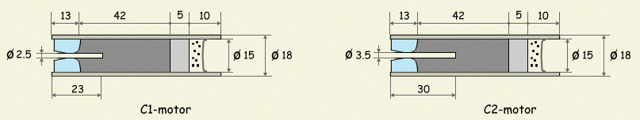
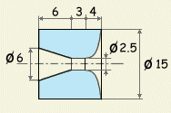
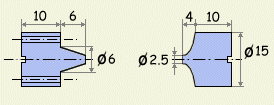
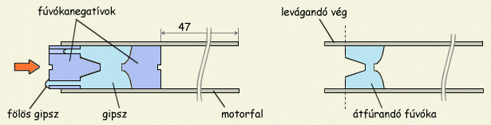
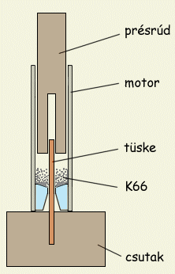

Ezen az oldalon tulajdonképpen két motor van bemutatva, amelyek csak nagyon kevéssé térnek el egymástól és amelyeket az egyszerűség kedvéért C1-nek és C2-nek nevezek a továbbiakban. Mindkét motor a kisebb AAA motorhoz nagyon hasonló felépítésű. A motrok fala csomagolópapírból míg a fúvóka gipszből készül és üzemanyagként szintén a K66 keveréket használják. A motorméretek megegyeznek a szabványos C-kategóriás motrokéval (18x70 mm), összimpulzus szerint szintén C kategóriásak lehetnek (It = 6 - 7 Ns). A motrok felépítése és méretei az 1. Ábrán láthatóak. A két motor közti különbség csupán annyi, hogy a C2 változat rövidebb égési idejű de nagyobb tolóerejű mint az C1. Maximum 100 g induló tömegű rakétákba ajánlottak.
|  | 1. Ábra: C1 és C2 motorok tervrajza (méretek mm-ben). |
A motorköpeny csomagolópapírból készül amit vízüveges CMC-vel ragasztunk össze. A csomagolópapír a papírtasakok készítéséhez is használt, barna színű, meglehetősen erős papír, valamivel vastagabb a nyomtatópapírnál. Természetesen a nyomtatópapír is megfelel a célnak, csupán picit nehezebb lesz a motor mert a nyomtatópapír fajsúlya valamivel nagyobb mint a csomagolópapíré. A CMC tapétragasztó, bármely háztartási boltban beszerezhető és rakétamotrok készítésére kiváló. A csomagolópapírból 8 cm széles és kb. 50 cm hosszú csíkot vágunk és teljes felületét bekenjük ragasztóval, kivéve az első néhány centimétert, hogy ne ragadjon a sablonra. Sablonként egy 15 mm külső átmérőjű rudat használunk. Ha a rúd fából van, tanácsos háztartási fóliával becsavarni mielőtt rátekernénk a papírcsíkot, így az nem fog ráragadni. A beragasztózott papírcsíkot a rakétatest oldalon leírt papírcsőkészítési metódus szerint eljárva csavarjuk a rúdra. Igyekezzünk minél szorosabban és pontosabban csavarni. A papírcsövek teljes kiszáradásához legalább egy nap szükséges szobahőmérsékleten. Kiszáradás után a papírcső külső átmérője 18 mm kell legyen.
|  |
| 2. Ábra: Fúvókaméretek |
A fúvóka gipszből készül, ami nagyon kopik, ennek ellenére a motrok még mindig meglehetősen erősek. A fúvóka egy konvergens és divergens résszel egyaránt ellátott de Laval fúvóka, ami talán nem indokolt ebbe a kis motorba, főként mert a gipsz nagyon kikopik az üzem végére és elveszti erdeti formáját. A fúvóka méretei a baloldali ábrán láthatóak. Elkészítéséhez szükséges egy - lehetőleg alumíniumból készült - sablon, azaz a fúvóka negatívja, amely segítségével kialakítjuk a megfelelő formát. A sablon két részből áll, méretei a mellékelt ábrán vannak feltüntetve. Előbb a fúvókanegatív konvergens részét helyezzük a papírcsőbe és 57 mm mélyen rögzítjük. Tanácsos a negatívokat kissé beolajozni, így később könnyedén eltávolíthatóak mert nem tapadnak túlságosan a gipszhez. Ugyanezt a célt szolgálja a negatívok végének befűrészelése is, amely lehetővé teszi, hogy egy csvarhúzóval megforgassuk a sablont, így segítve elő a gipsztől való elválást. Gipszporból vízzel puha pasztát keverünk, amit a papírcsövek végébe tömünk 1 cm hosszan. Ezután a negatív másik felét is belenyomjuk a papírcsőbe, úgy, hogy ennek vége egy szintben legyen a papírcső végével. Ily módon eljárva a sablon két része között 3 mm távolság marad. A fölösleges gipsz a sablon furatain kinyomódik. Jó igyekezni, mert a gipsz néhány perc alatt megszilárdul, és a kemény gipsz már nem szívesen préselődik át a furatokon. Lényeges, hogy a papírcsövek ne legyenek teljesen kiszáradva amikor a gipszet belenyomkodjuk.
|  |
| 3. Ábra: Fúvókanegatívok |
Az üzemanyag 66% KNO3-ból, 23% szénből és 11% kénből készül (én egyszerűen K66-nak hívom). Készítése a lőporos üzemanyagoknál leírt módon történik. Fontos, hogy nagyon finomra legyen őrölve, különben nem fog elég gyorsan égni. Az üzemanyag 1.6 g/cm3 környékére préselve kerül a motorba. A motorba töltés előtt a K66-ot kissé megnedvesítjük egészségügyi szesszel (kb. 5 - 6% szesz kell bele). A nedves K66-ot bátran lehet préselni, mert nem áll fenn a begyúlás veszélye.
|  | 4. Ábra: A fúvóka készítésének lépései |
A késleltető és kidobótöltet: késleltetőként KNO3/dextróz 2/1 arányú keverékét használjuk, ugyanúgy 1.6 g/cm3-re tömörítve, mint az üzemanyag. Az ábrán látható 5 mm hosszan préselt késleltető kb 3 másodperc időzítést eredményez. Kidobótöltetként 0.3 g préseletlen feketelőport (összetétel: 75/15/10 KNO3/C/S) használunk. A lőpor helyett használhatunk 0.4 g préseletlen K66-ot is. A kidobótöltet kihullását megakadályozandó, a motrot egy 18 mm-es átmérőjű papírkarikával zárjuk le, amelyet a motor végébe tolunk az üzemanyag betöltéséhez használt présrúd segítségével.
Az üzemanyag betöltése: A préselést kétféleképpen végezhetjük el. Ha van rá módunk, jobb egy hidraulikus prés segítségével sajtolni a motorba az üzemanyagot, ehhez azonban szükséges egy prés. Hidraulikus préssel akár 1.7 g/cm3-re is tömöríthetjük a hajtóanyagot, ráadásul igen egyenletesen. Az egyszerűbb megoldás az üzemanyagot kalapáccsal döngölni a motorba: lassan adagolva és jó erősen döngölve csaknem azt az eredményt érhetjük el, mint a hidraulikus préssel. A kalapácsos módszer jellemzően 1.6 g/cm3 fajsúlyhoz vezet. Mindkét esetben lényeges, hogy az üzemanyag nedves legyen a préselés során. Mindkét motorba 11 g K66 szükséges, ez préselés után ~42 mm hosszú tömböt eredményez a motorban.
A préselést úgy kell végezni, hogy egyben kialakítsuk a csatornát a motor közepében. Erre a célra egy 2.5 mm átmérőjű töltőtüske szükséges (a C2 motorhoz 3.5 mm-es), amit egy darab fába illesztünk úgy, hogy 23 mm kilógjon belőle(30 mm a C2 esetén). A töltőtüske kiálló végére ráillesztjük az előre elkészített motorhüvelyt, így ez a motor belsejébe 10 mm-re fog belógni(illetve 17 mm-re a C2 esetén). A présrúd egy 14 mm-es fából készült rúd, amelynek egyik végébe egy 20 mm hosszú 4 mm átmérőjű furatot alakítunk ki. Szükséges ezen kívül egy másik présrúd is, furat nélkül. Ezt akkor használjuk, ha az üzemanyag szintje már magasabb mint a töltőtüske belógó része. Tanácsos a présrudak végét szigetelőszalaggal jó erősen körbetekerni, hogy ne menjen szét a kalapálás során.
|  |
| 5. Ábra: C-motor töltése üzemanyaggal |
Figyelem! A K66 tömörítése nem teljesen veszélytelen, ám a biztonsági előírásokat betartva ezt a veszélyt minimálisra lehet csökkenteni. Soha ne végezzük a préselést szárazon, mindig legyen kellően megnedvesítve az üzemanyag. A nedves K66 is ég, de nedvesen sokkal kisebb a begyulladás valószínűsége. Soha ne használjunk acélból vagy vasból készült préseszközöket, mert ezek szikrát képezhetnek. Használjunk keményfa- vagy bronzeszközöket és viseljünk védőfelszerelést a préselés során.
Préselés után kihúzzuk a furatból a töltőtüskét (ha fából van, csak óvatosan, mert könnyen beletörik, a préselt üzemanyag ugyanis nagyon szorosan fogja tartani). Ezután a motrot ki kell szárítani. Ha a préseléshez alkoholt használtunk, 40-50 °C-on egy napig szárítjuk. Amennyiben alkohol helyett vízzel préseltünk, még hosszabb ideig hagyjuk száradni. A kiszáradt motrokat száraz helyen tároljuk (pl. pezsgőtabbletta doboza).
Begyújtás: Mint a lőporos motrok általában, ez a motor is nagyon könnyen begyújtható, gyújtózsinór vagy egyszerű elektromos gyújtás tökéletesen megfelel a célnak. Ez utóbbi esetén tanácsos az ellenállást az üzemanyagcsatorna végéig benyomni, hogy az égés minél bennebbről kezdődjön. Tilos a furatba bármilyen a K66-nál energikusabb gyújtóanyagot tölteni, mert a hirtelen fejlődő nyomás elrepesztheti ay üzemanyagtömböt, ami motorrobbanáshoz vezethet.
Teljesítményadatok: sajnos nem állnak rendelkezésemre mérőpados eredmények, így a következő adatok fenntartással kezelendőek. Az C1 változatú motor hozzávetőlegesen 3 - 4 N tolóerejű és kb. 1.5 sec az égési ideje. A C2 változat valamivel erősebb, saccra 5 - 6 N tolóerejű lehet és kb 1 sec az égési ideje. Az értékek inkább alul- mint felülbecsültek. Mindkét motrot maximum 100 g induló tömegű rakétával próbáltam, a gyengébbik változat is nagyon jól startolt, igencsak résen kell lenni a fényképezőgéppel, ha el akarjuk kapni az indulás pillanatát.